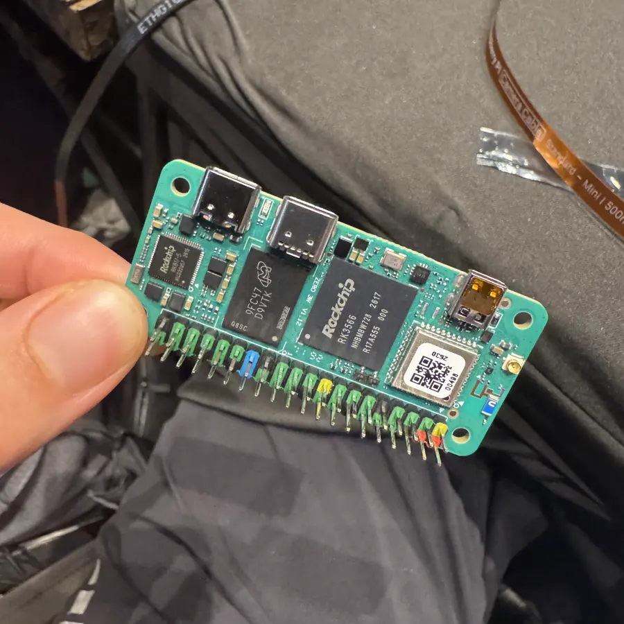
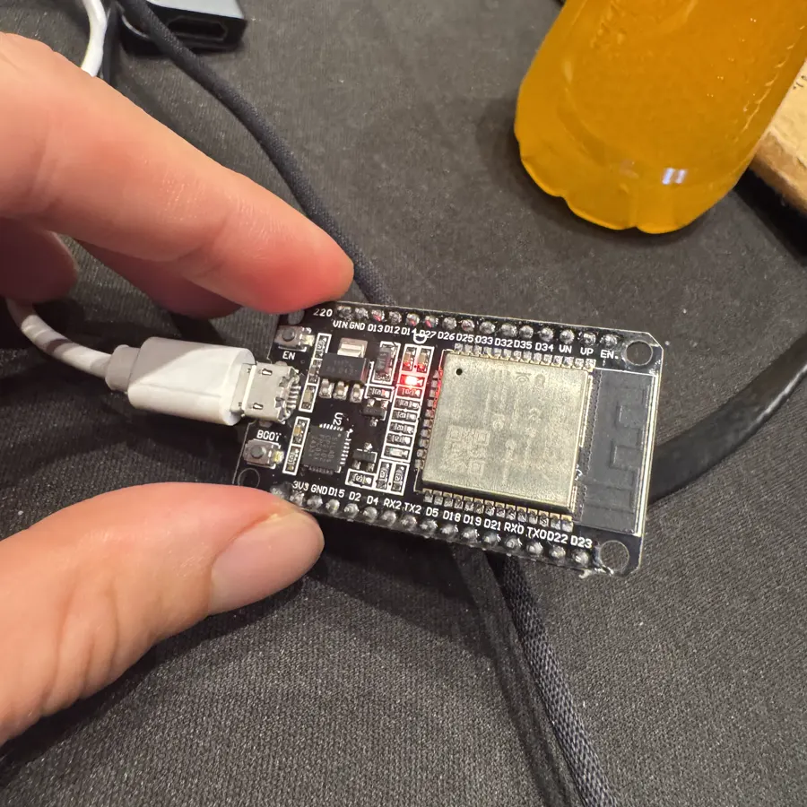
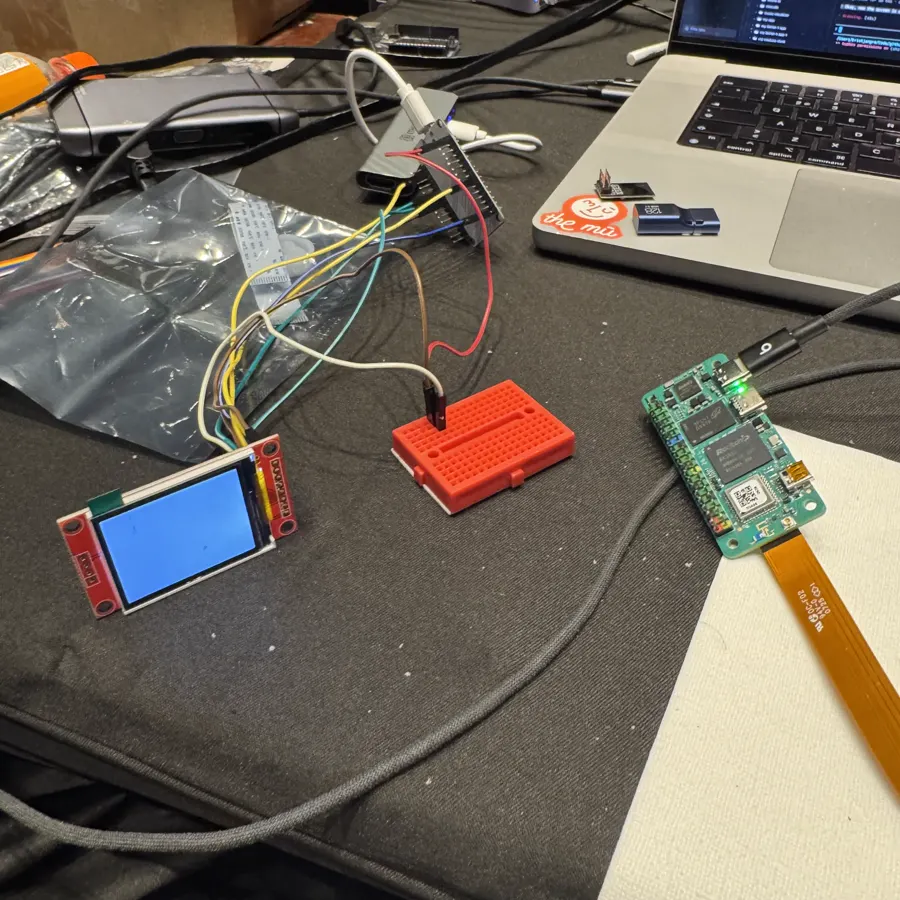
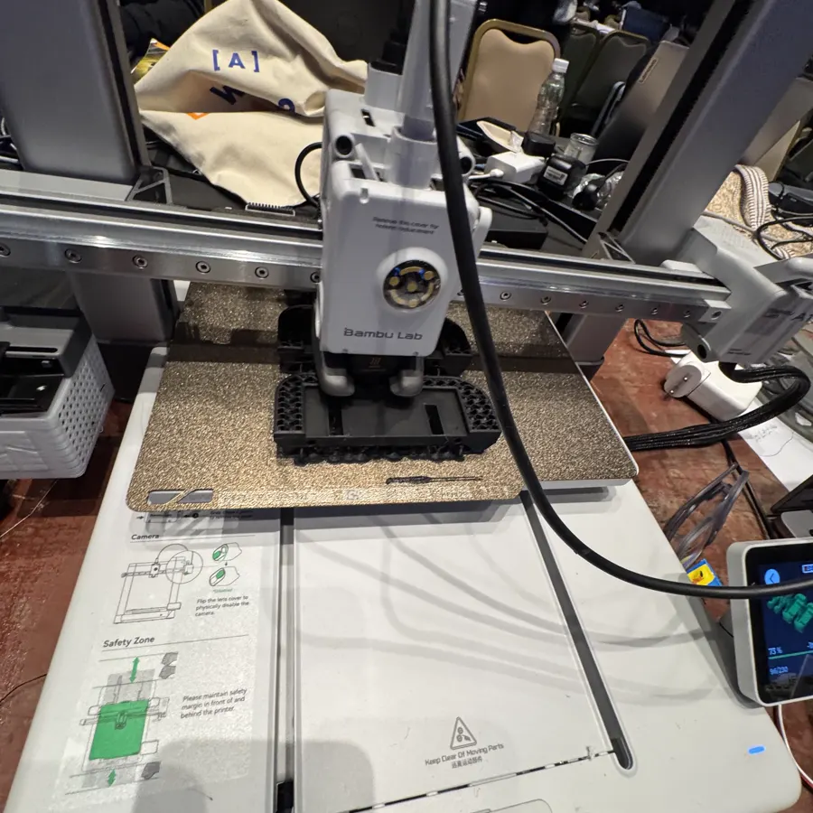
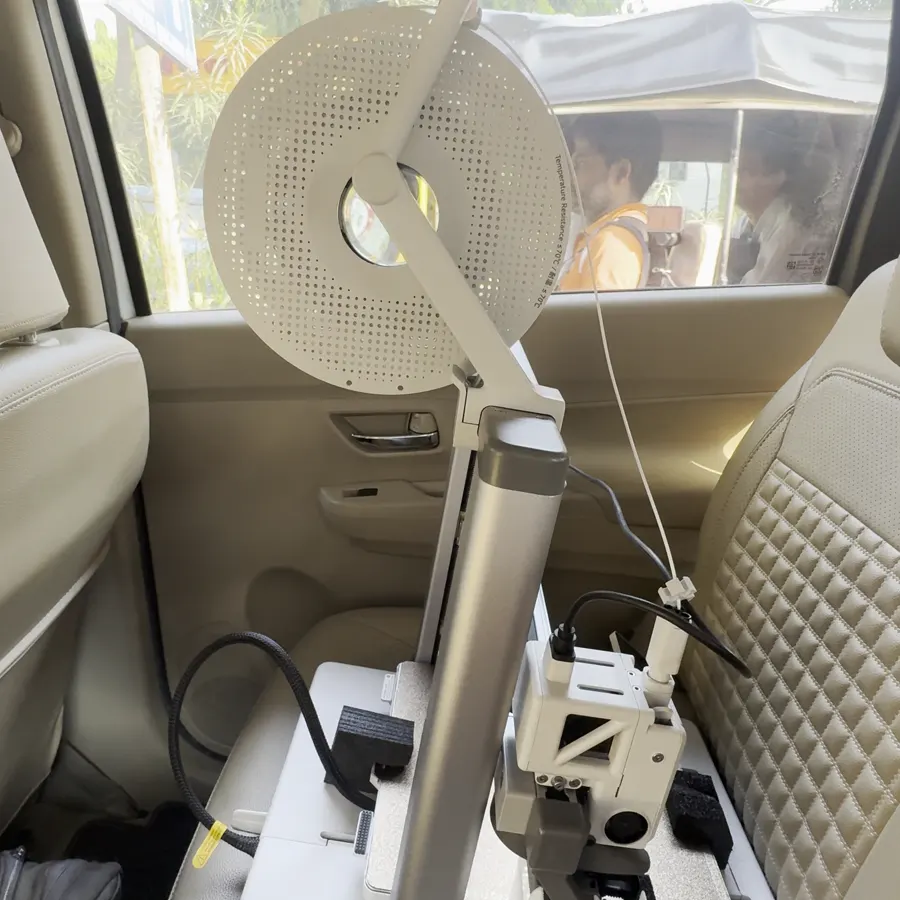
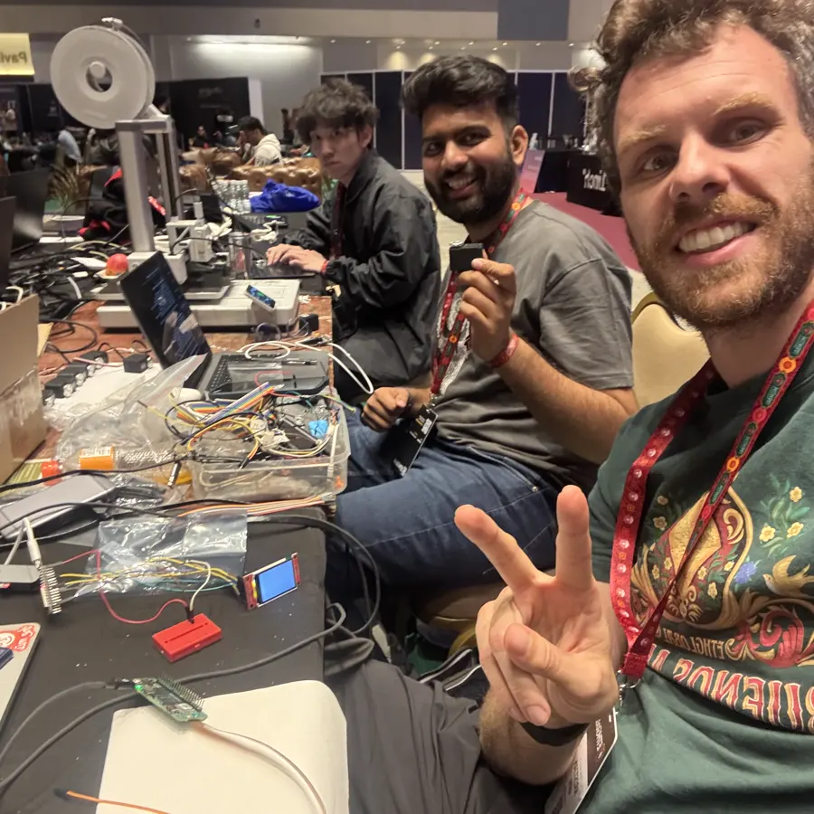

Soon, everyone will have a robot of their own.
It'll run the errands you don't have time for. And a robot that does things has to pay for them.
Not your card. Not a company's wallet. Its own key.
Today a robot can only pay with your card, or from a wallet a company holds for it. Either way, someone else is in control. So the key lives on the robot, your rules live on a public chain, and your money stays in your own wallet.
What we built this weekend
The first version works, with real money.
A passkey wallet, a robot with its own key, a budget it can't break, and you in the loop for the big ones. Live on Arc mainnet with real USDC.






You give it a budget, not your wallet.
One tap: three dollars a day, one dollar a go, only at the stall you pick. The money stays in your wallet. The rules sit on Arc, and not even we can bend them.
Enforced on Arc
It shops for you.
Chai at the stall: it decides, its chip signs, Arc settles, the gate opens. Every decision comes with a reason you can read later.
Decided by 0G, every errand kept on 0G Storage
Bigger things ask you first.
A two-dollar thali is over its limit, so your phone asks. You prove it's really you with World ID and say yes or no. Say no and nothing is paid. Over the day's budget it simply walks away. And one tap switches it off; not even our servers can undo that.
A verified human, with World ID
Now, live.
A chai within budget, a thali that asks, and the off switch.
Next
A robot for everyone, with a budget, not your wallet.
- The robot's agent runs on the robot, not on our servers
- Several robots on one wallet, each with its own budget
- Robots paying robots for charging, parcels and rides